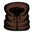
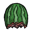
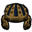
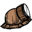
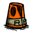
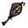

The 'Wetness' meter
| “ | Wetter than water itself. | ” |
| –Maxwell | ||
Wetness is a game mechanic found in the Reign of Giants DLC. Whenever it rains, a small meter will appear showing the player's current 'wetness'. Unlike Overheating or Freezing wetness will not directly damage the player's health, but if a player becomes too wet (at least 35 wetness points), items will become slippery, clothing will drain sanity, and they will begin to freeze.
The wetness of an item depends on the wetness of the player when in their inventory, and on that of the world otherwise. Items in waterproof containers will always be dry. An item's wetness is seen by a blue outline around it in the inventory. The text also becomes blue. Wet structures and environmental objects like trees become darker when wet. An item can be kept dry by being stored in a water proof container, such as a Chest, Piggyback or Krampus Sack. Items can also be dried faster by placing them next to a fire. Items and objects that become wet will become titled as follow with following effects:
Ice melting in the inventory will increase wetness, and so will wearing an Ice Cube or Fashion Melon.
Wetness lowers the thermal sensation of the player. At maximum wetness, the ambient temperature is perceived to be 30 degrees lower, and proportionally for other values (for example, at half wetness the temperature is perceived to be 15 degrees lower). If the perceived temperature falls below 0 degrees, the player begins to freeze. For tips on surviving Freezing, please go to the appropriate page.
The player can dry themselves out faster by standing next to a fire. The rate of wetness can also be decreased, but not stopped, by standing under a tree.This will decrease the amount of time waiting to lose the 'Wet' status.
The best way to keep your wetness low during Spring is to wear some Water Resistant gear. These items decrease the rate at which the player gets wet and having more than one of them equiped provides a cumulative bonus. The character stops getting wet when 100% water resistance is achieved, so the player will want to wear a combination of them that doesn't surpass 100% by too much. When 100% water resistance is achieved any wetness previously had will start to lower until the player becomes completely dry.
| Item | Water Resistance | Slot |
|---|---|---|
| 20% | Head | |
| Beefalo Hat | 20% | Head |
|  Breezy Vest | 20% | Chest |
|  Fashion Melon | 20% | Head |
|  Football Helmet | 20% | Head |
|  Miner Hat | 20% | Head |
| Shelmet | 20% | Head |
| Spiderhat | 20% | Head |
| Straw Hat | 20% | Head |
|  Summer Frest | 20% | Chest |
| Top Hat | 20% | Head |
|  Pretty Parasol | 50% | Hand |
| Rain Hat | 70% | Head |
| 90% | Hand | |
| Rain Coat | 100% | Chest |
| Eyebrella | 100% | Head |
As the table shows, wearing a Rain Coat or Eyebrella will be enough to prevent the player from getting wet making them the best items to survive Spring's rain.
| Gameplay Mechanics | |
| Activities | Cooking • Crafting • Farming • Fishing • Sleeping |
| Environment | Day-Night Cycle • Moon Cycle • Nightmare Cycle • Earthquake • Lightning • Rain |
| Seasons | Summer • Winter • ( Autumn • Spring ) |
| Mechanics | Beard • Characters • Controls • Death • Durability • Experience • Fire • Food Spoilage • Freezing ( Overheating ) • Health • Hunger • Light • Map • Naughtiness • Non-renewable resources • Sanity • Saving (Wetness) |
| Mode | Adventure Mode • Sandbox Mode • Caves • Ruins |
| Others | Pig Village • Road (Trail) • Set Piece • Things |
{kind=link}